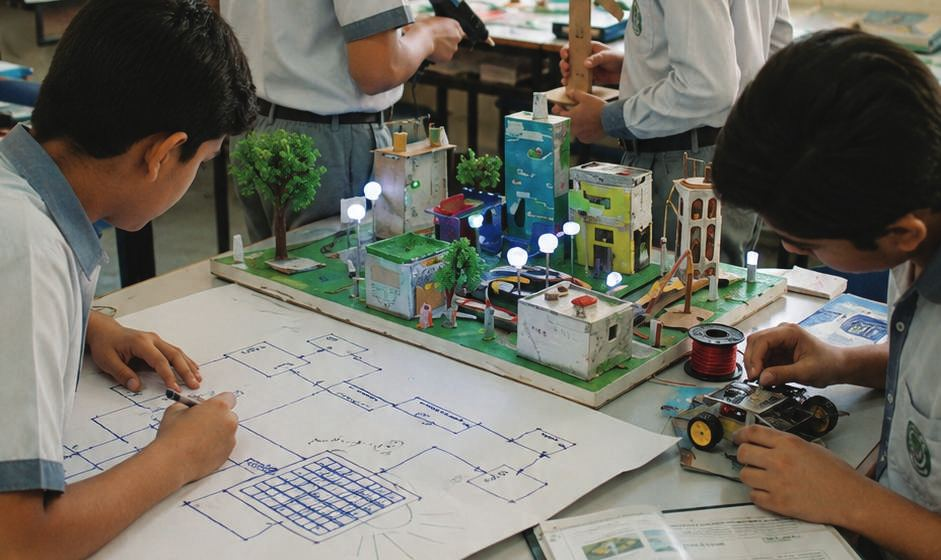

Can your students explain what they learned this week, in their own words, to someone outside the classroom?
Most honest answers are uncomfortable, not because students or teachers aren't capable, but because the system rewards coverage over understanding.
Today's curriculum demands application, critical thinking, and problem-solving as explicit outcomes. Very few schools have a structured system to deliver them.
That gap is what Genesis exists to close.
Structured Project-Based Learning
Genuine PBL is not about what students make. It is about what students cannot avoid thinking through. A strong project creates a structured situation where students must:
Confront a real problem
Not a textbook question, a genuine situation that has no single correct answer.
Make real decisions
Choose an approach, commit to it & take responsibility for the outcome.
Test their ideas
Build or apply something, observe what happens, and evaluate the result.
Revise based on evidence
Identify what did not work, understand why, and improve.
Explain their reasoning
Communicate not just what they did, but why, publicly, to others.

When a project is designed properly, a student cannot simply copy an answer. They must think.
Students become 21st-Century Leaders
Students move from waiting for instructions to acting as thinkers and solution builders, the 21st-century skills today's curriculum demands.
Teachers can teach through projects
Hands-on, project-specific training in facilitating structured, inquiry-driven learning, backed by a Teacher's Guide and rubrics for every project.
Teachers build character, not coverage
Every project embeds decision-points where honesty, responsibility, and integrity are practiced, not just discussed.
Genesis doesn't deliver and disappear.
We stay with the school through implementation.